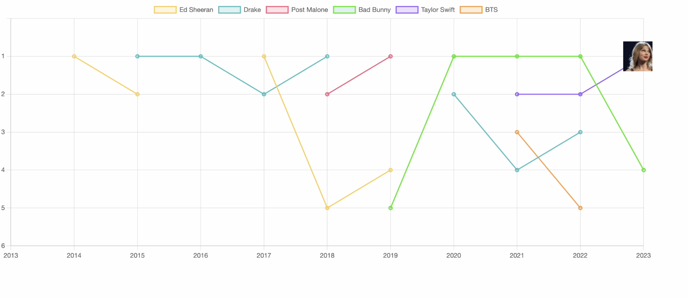

Taylor Alison Swift released her self-titled debut album in 2006. Nearly two decades later, it seems she is still climbing up to the peak of her career.
With 12 Grammy awards (including 3 Album of the Year awards), she is the most-streamed woman on Spotify and Apple Music, the highest-grossing female performer ever, and the first billionaire with music as the main source of income.
In other words, Taylor Swift is the music industry.
Visualization looking at the success of Taylor's discography in the broader music scene.
Swift has obviously made a name for herself amongst giants, let's take a deeper look into how she has been able to achieve and maintain this level of success for nearly two decades.
Swift's mark as a musician has always been the fact that she writes all of her own music, both with and without other co-writers. In fact, following her 2010 Grammy Album of the Year win for her album Fearless, critics claimed that she would not have been able to win without the help of her co-writers. In response, Swift penned her next album, Speak Now, entirely by herself. Her lyricism and storytelling has always been what connected Swift to her fans. Let's take a deeper look into the worlds Swift creates through her music.
More than any other place, Taylor Swift references New York in her lyrics. There's the obvious "Welcome to New York," but songs such as "Mean," "Come Back," "Holy Ground," "False God," "Daylight" and "Hoax" all include a general New York reference as well. The map below shows some specific places within New York that Taylor Swift has referenced, along with the song.
Click on a location on the map to see the song lyric associated with it! Zoom out to see more locations.
Over the span of her career, the parallels in her storytelling and lyrics over time have amassed her an incredible fan base. Swifties clamor over the opportunity to hear Taylor Swift live in concert. She is currently on The Eras Tour, the highest grossing tour in history. Let's see where in the world Taylor has been, and what makes a Taylor Swift concert so special
Where has Taylor Swift performed on tour? Scroll around the globe to find out!
Prior to her Eras Tour, which is ongoing, 83% of Taylor Swift's tours were performed in the United States. Let's take a closer look at where her tours occurred within the United States!
Now, it's your turn to look behind the curtain and break down the production features of some of your favorite songs.
Danceability: A measure of how suitable a track is for dancing based on a combination of musical elements.
Energy: Represents the intensity and activity of a song. High energy tracks feel fast, loud, and noisy.
Valence: Describes the musical positiveness conveyed by a track. Higher valence sounds more positive.
Acousticness: Indicates the likelihood of a track being acoustic. A higher acousticness value suggests a more acoustic track.